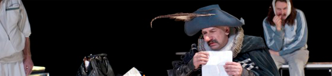
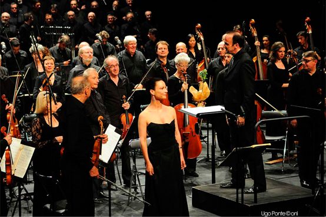

cyrano de bergerac
Philippe TORRETON est CYRANO : Extrait inteview fleuve

«Plaisanter en face du danger c’est la suprême politesse, un délicat refus de se prendre au tragique; le panache est alors la pudeur de l’héroïsme, comme un sourire par lequel on s’excuse d’être sublime… » C’est dans le discours de réception d’Edmond Rostand à l’Académie française. Comme pour le contexte historique, avez-vous voulu vous débarrasser du panache de Cyrano pour mieux le comprendre ?
Nous avions affiché cette phrase pendant les répétitions, elle est très belle. Mais je ne crois pas que la résolution de la pièce tienne à une définition du panache. C’est une suite d’actions qui prouvent que Cyrano a du panache.
Cyrano termine lui-même, à l’orée de sa mort, par ce mot, « mon panache ».
Oui. Mais il en meurt. Il se rend peut-être compte de sa vacuité.
Le panache est une forme d’héroïsme que l’on retrouve notamment dans le cinéma américain. Lorsque James Bond ou Bruce Willis dessoudent dix ennemis, ils ne peuvent s’empêcher de placer une blague ! Hollywood est-elle sous influence Rostand depuis 60 ans ?!
C’est surtout un code de ce genre de cinéma… Mais dans les années 40, José Ferrer a récolté un Oscar pour son rôle dans Cyrano, ça vient peut-être de là... J’adore cette version, le mec a un charisme fou, très droit. Après, Belmondo aussi a incarné beaucoup de rôle comme ça, genre « je suis dans la merde mais je plaisante quand même »…
Cyrano incarne l’esprit typiquement français. Ce monument représente-t-il un poids lorsqu’on décide de s’y attaquer ? C’est un enjeu auquel vous avez pensé ?
C’est un peu La Marseillaise... Du coup, ça a surement bloqué certaines aventures théâtrales, oui. Je crois que c’est la première fois que l’on ose faire un vrai travail dramaturgique autour de cette pièce. Des petits décalages spatio-temporels ont existé par le passé, mais personne n’a, à ma connaissance, osé considérer cette pièce comme un matériau théâtral digne de nom. Ce qu’on s’autorise avec Shakespeare, Marivaux ou Tchekhov, pourquoi ne le ferait-on pas aussi avec Cyrano ? À partir de là, on peut se retrousser les manches et y aller. Aller voir ce que cette pièce a dans le bide.
Lire l’interview dans son intégrali
Programmation
Extrait interview d'Éric ROUCHAUD Directeur «Le Nouveau Théâtre de Compiègne»
La mezzo-soprano Isabelle Senges, le chef d'orchestre Jonas Alber et l'Orchestre National de Lille lors de la création de la Sinfonia da Requiem de Nicolas Bacri, le 29 juin 2012 au Théâtre Impérial de Compiègne. Ugo Ponte © onl
Le Festival des Forêts a lieu entre mi-juin et mi-juillet
éanmoins, pour cette saison nous avons collaboré avec le Festival en accueillant les œuvres de Nicolas Bacri et l'Orchestre de Lille. En parallèle, nous avons porté avec le Festival un spectacle de théâtre et de musique autour de Jean-Jacques Rousseau pour l'anniversaire de sa mort survenue dans l'Oise.
Dans la pratique, le Festival utilise notre salle et, depuis l'an dernier, nous sommes partenaires et complémentaires. Il a sa propre programmation, même si l'on retrouve certains artistes dans la nôtre. C'est notamment le cas de l'Orchestre de Picardie qui vient régulièrement chez nous et qui est aussi très présent dans la proposition du Festival.
Lire l’interview dans son intégralité
Programmation